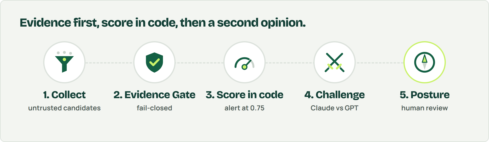
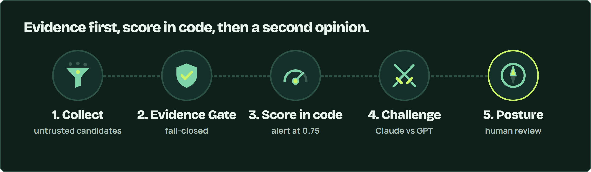

Risk never arrives as one headline.
Layoffs, a cancelled debt exchange, a covenant default. Alone, each has an excuse. SignalScout sweeps for the cluster and shows its work on every dot.
Open the live replayProven on a real collapse
The warning was public. It was scattered.
Replay Bed Bath & Beyond, August 2022 to April 2023.
Why you can trust it
Every claim gets a receipt.
A fail-closed Evidence Gate lets a document in only when it proves entity, source, public date and hash.
How it works
Evidence first, score in code, then a second opinion.
Five steps take untrusted candidates to a review posture for a human analyst.




Zero hindsight
Evidence appears only when it was public at the replay date.
Scored by code, not by AI
Models draft the explanation. Deterministic code owns the score, the stage and every blocker.
It argues with itself
A GPT Challenger hunts for the benign explanation behind Claude's hypothesis.
Replay it yourself.
Built for strategy, risk and procurement analysts. Decision support, never a bankruptcy prediction.
Open the live replay